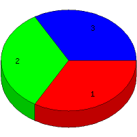

Week of 8/15/2010 to 8/21/2010: Top 3 of 3 Search Keywords
Sorted by Access Count

Rank
Search Keyword(s)
Accesses
%
1
"james edward grimshaw"
1
33.33
2
cranston east class 1971
1
33.33
3
joseph f. carron
1
33.33